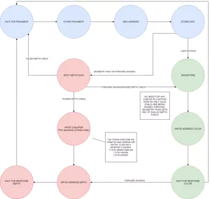
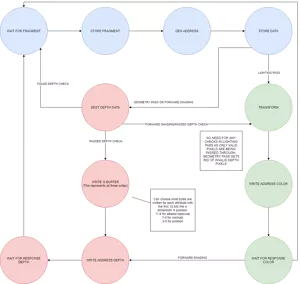

Jacob Betsworth
About me
Email: jtbets12@outlook.com Developed a CPU simulator using javascript, css, and html to teach students how a processor works. Includes internal workings of a simple processor as well as highlights the elements that are currently being used. Was personally in charge of making the user elements such as the buttons, controls, and scroll over text. Simulator has been used in the class "Introduction to Digital Logic" at Iowa State University.CENOD - Customizable Enemy N Object Detection
Erasure Coding on the SmartSSD
Projects
Graduated with a Master's of Science in Computer Engineering at Iowa State. At Iowa State I have assisted in classes like senior design where I reviewed students' documents and informing them where inadequacies were and an early embedded systems class that involved students designing code in C for a roomba with added microcontroller and sensors. I researched with the Data Storage Lab during my last semester where I was tasked with learning erasure coding, helping explore experiment platforms for further research, and was introduced to computational storage devices like the Samsung SmartSSD. I aim to continue a career into research and logic design so I always have new topics to explore and understand.
With the goal of synthesizing code on the Samsung SmartSSD, researched erasure coding and different distributed systems. Designed code that was a simplified form of the Jerasure erasure coding module in Ceph to make it easy for compilation of the Xilinx FPGA inside the SmartSSD. Project currently ongoingSenior Design Project: i281 CPU simulator
Using the OpenCV plugin in Python, developed a program to take visual input and identify enemies and objects. Identification is done using templates and colors the user has customized for select games. For use in roguelike games and other singleplayer games, useless in most multiplayer games. Wanted a way to identify ways I had died in games and what was on screen at times. Developed a GPU on an FPGA over a semester long class using VHDL for the hardware and C for the drivers. Worked way up from producing a single red triangle to producing multiple shapes and colors at the same time. To accomplish made the rasterizer, vertex shader, and render output modules with custom modifications to allow deferred shading by the end of the semester. Created a MIPS processor with an ARM ISA in VHDL with its individual registers, control logic, memory units, and ALUs. Tested the entire processor on an FPGA by running different instructions in assembly then reviewing the resulting waveforms. Drew schematics to keep the team unified in the design plan.GPU Architecture

MIPS pipeline processor


 

-400w.png)